This week in React Knowledgeable, I did a sharing on Git commands.
The title of the talk was called "Git Gudder", because almost a year ago I did a lightning sharing on "Git Gud", (Get Good), this follow up sharing used the comparative of "Git Gud", therefore, "Git Gudder".
Will there be a "Git Guddest"? 🤔
Disclaimer
I am by no means a Git master or anywhere near mastering Git. I do google or refer to the docs whenever I am unsure of the commands. In this talk, I listed out all the common history manipulation commands Git provides. I hoped that, with it, we are aware of what is available in our toolbox. So, we can look for it whenever we need it.
git merge
There's 2 kind of git merge, the fast-forward and non fast-forward.
Fast-forward merge
Merging master into branch A:
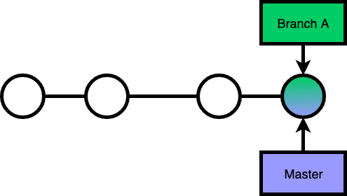
Non Fast-forward merge
Merging master into branch A:
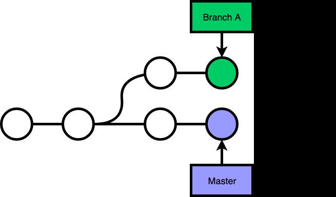
Non fast-forward merge will create an extra commit that merges 2 branches.
git pull
By default, git pull is git fetch origin branch + git merge origin/branch.
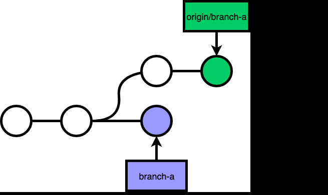
git reset
git reset --hard allows you to change the reference of where your branch is pointing at.
git checkout branch-b, git reset --hard branch-a, git reset --hard #d:
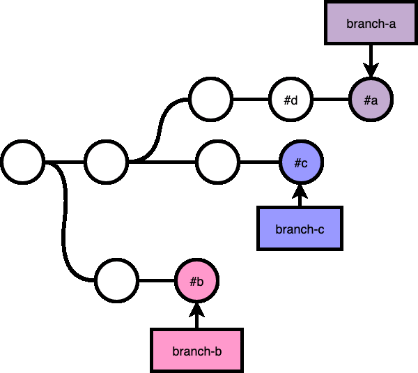
git cherry-pick
cherry-pick allows you to pick commits from some other branches, tags, or refs.
git checkout branch-b, git cherry-pick branch-a:
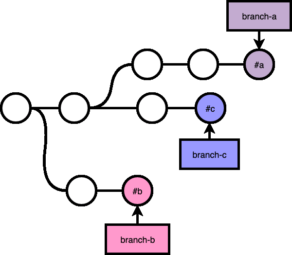
git revert
git revert creates a new commit that reverses the change of the commit that you are reverting.
For example, if you accidentally merged feat/a into master branch, you can git checkout master, git revert #1:
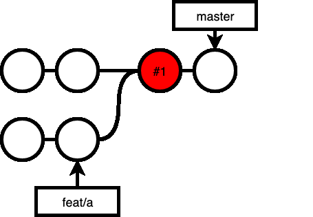
If you know merge master into your feat/a branch, you would noticed that all the changes in the branch is gone, because the merge is a fast-forward merge, that includes the revert commit made in the branch:
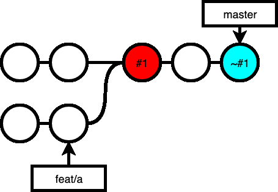
If you want to recover the changes made in feat/a, you can revert the revert:
git revert ~#1:
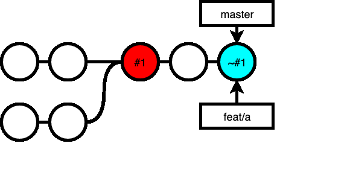
Now, when you are ready to merge your feat/a branch into master, you get the all the changes in feat/a, a commit that revert all that, and a commit that reverts the revert commit, which meant, you still have all the changes in feat/a in master:
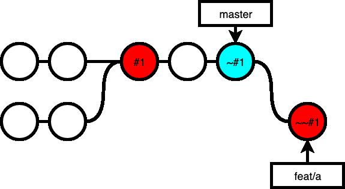
git rebase
git rebase allows you to "move" commits to a different "base".
For example, you branched out branch-a from master a while ago, and master has made a few more commits. But if you merge your branch into master now, it would be a non fast-forward merge, creating an extra commit to the history. If you want a clean, one-line history, you can do a rebase, replaying commits that you have made in branch-a on top of the latest master.
git checkout branch-a, git rebase master:
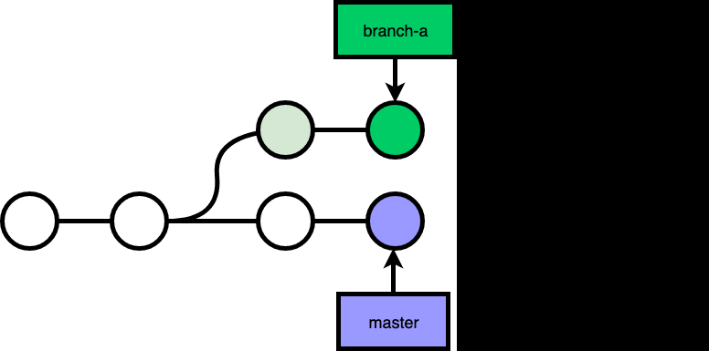
git rebase does not have to be on top of the branch that you branched out, you can rebase to anywhere:
git checkout branch-a, git rebase --onto branch-b master branch-a:
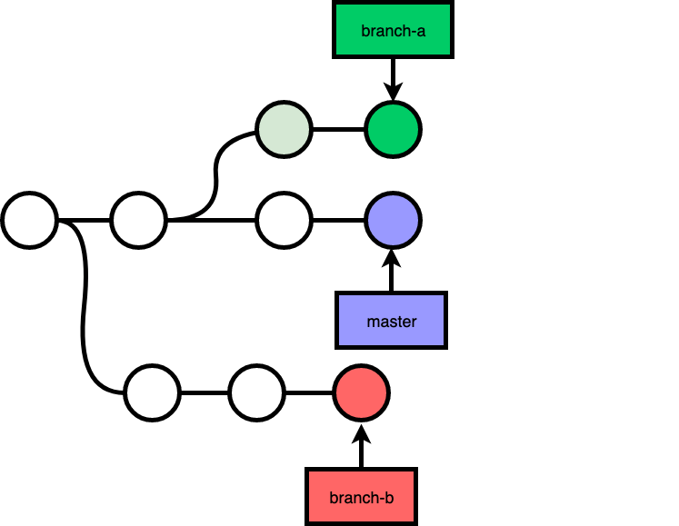
There's 3 reference point you should know when doing a git rebase:
<new base><upstream><branch>
Here are a few things you should know:
git rebasewill replay the commits from<upstream>to<branch>onto<new base>.- If you specify
<upstream>as a branch name,git rebasewill replay commits from the common ancestor of<upstream>and<branch>to<branch>. - If you do not specify
<branch>, the default is theHEAD, current commit you are at now. - If you do not specify
--onto <new base>, the new base will be default to<upsttream>, that's whygit rebase masteris equivalent togit rebase --onto master master. - If you do not specify
<upstream>, it will be the upstream of the current branch. Sogit rebaseis equivalent togit rebase <origin/current-branch>.
git rebase --interactive
git rebase has an interactive mode, which allows you to specify instructions while replaying commits during a rebase.
When you run git rebase --interactive, git will prompt you with an editor to edit the instructions. In it, you will see a list of commits that will be replayed:
pick #2 commit msg 2
pick #3 commit msg 3
pick #4 commit msg 4
pick #5 commit msg 5
pick #6 commit msg 6
# Rebase #1..#6 onto #1 (5 commands)
#
# Commands:
# p, pick = use commit
# r, reword = use commit, but edit the commit message
# e, edit = use commit, but stop for amending
...pick
The default instruction. Will just use the commit while replaying:
pick #2 commit msg 2
pick #3 commit msg 3
pick #4 commit msg 4
pick #5 commit msg 5
pick #6 commit msg 6drop
Drop will omit the commit:
pick #2 commit msg 2
drop #3 commit msg 3
pick #4 commit msg 4
pick #5 commit msg 5
pick #6 commit msg 6squash & fixup
Squash & Fixup will combine your commit with the previous commit, the only difference is that with squash, git will prompt you to edit the commit message of the combined commit, while fixup will drop the commit of the fixuped commit.
pick #2 commit msg 2
squash #3 commit msg 3
pick #4 commit msg 4
fixup #5 commit msg 5
pick #6 commit msg 6break
Pause the rebase. You can do add more commits here if you want. When you are done, make sure that your workspace and stage is clean, run git rebase --continue to continue.

pick #2 commit msg 2
pick #3 commit msg 3
break
pick #4 commit msg 4
pick #5 commit msg 5
pick #6 commit msg 6edit
Pause the rebase at the commit that you are editing, before the commit has been commited. You can add, remove or ammend your files before continue the rebase process.
pick #2 commit msg 2
edit #3 commit msg 3
pick #4 commit msg 4
pick #5 commit msg 5
pick #6 commit msg 6git pull --rebase
There's a rebase mode for git pull, where it will be git fetch origin branch + git rebase origin/branch.
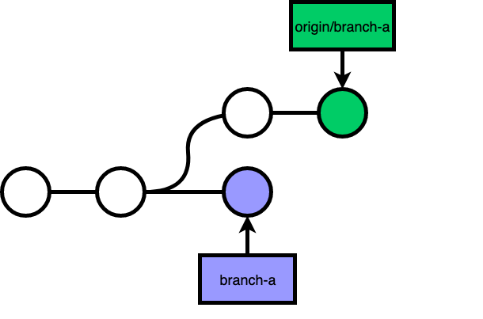
git rebase a shared branch
Say x and y are working on the feat/a branch.
x decided to rebase the feat/a branch to squash and drop some commits:
While x had done that, that was just a part of the whole picture. Because the rebase on his local machine changed the git history on his local copy only.
To make the change on the remote server as well, x forced push his branch to the remote server. (Note: You can push without --force if the origin branch cannot fast-forward merge your local branch)
While y on the other hand, did not know about the rebase, so when y pulled the code, it ended up with a messed up merged of a messed up git history:
In most cases, there would be a merge conflict, because x and y's branch would have made changes on the same file.
So, the correct way, if the rebase is necessary, is to notify y about the rebase, so that y can git reset --hard his branch to the remote branch.
If unfortunately, at the same time, y has made more commits to his local branch, he would have to git rebase the new changes onto the remote branch, or git cherry-pick the new changes after the git reset --hard.
In the companies that I have worked with, forbidden a rebase on a common branch, especially the master branch.
git log
The go-to command to look at your git history. There's a few options that is worth mentioning, that allow us to search through the sea of commits:
--since, --after, --until, --before
You can filter out commits within a specific timeframe
--grep
You can filter out commits based on commit message
--invert-grep
You can filter out commits that does not match the --grep
--all-match
--grep is a OR filter, --all-match make it a AND filter
--min-parents, --max-parents, --merges, --no-merges
You can specify commits with the number of parents. A simple merge commit has 2 parent, so --merge is equivalent to --min-parents=2.
--first-parent
You can follow only the first parent commit upon seeing a merge commit. This is especially useful when you have merged of branches in, --first-parent allow you to filter out only the merge commit and the commit you have made on the current branch.
git reflog
The reference log shows you all the HEAD position you have been to. This is especially useful when you have reset --hard or rebase, you can still find back the commit reference that you were at previously, so you can recover them.
git bisect
This is a useful command that I am looking forward to use it.
Often times when you noticed something has changed / break / less optimised, yet you do not know when this change was introduced into your repository. git bisect allows you to do binary search on the history, so that you can quickly pin down the commit where the change was introduced.
$ git bisect start # starts the bisect session
$ git bisect bad v2.5.1 # specify the commit you know is bad
$ git bisect good v2.6.13 # specify the commit you knew were goodOnce you've specified at least one bad and one good commit, git bisect will find and checkout to a commit in the middle of that range between bad and good and greets you with:
Bisecting: 675 revisions left to test after this (roughly 10 steps)
You can know test / verify / profile your code, and specify whether the current commit is a good commit or a bad commit:
# if it is a good commit
$ git bisect good
# if it is a bad commit
$ git bisect badContinue doing it until eventually there's no more commit to inspect. git bisect will print out the description of the first bad commit.
Summary
We've gone through the following git commands:
- git merge
- git reset
- git cherry-pick
- git revert
- git rebase
- git log
- git reflog
- git bisect
Hopefully we are now git gudder than before!
Related topic: Git commits went missing after a rebase